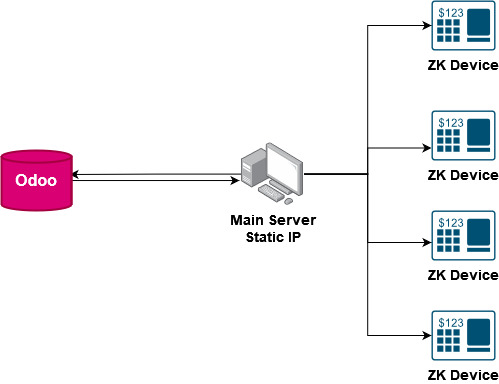
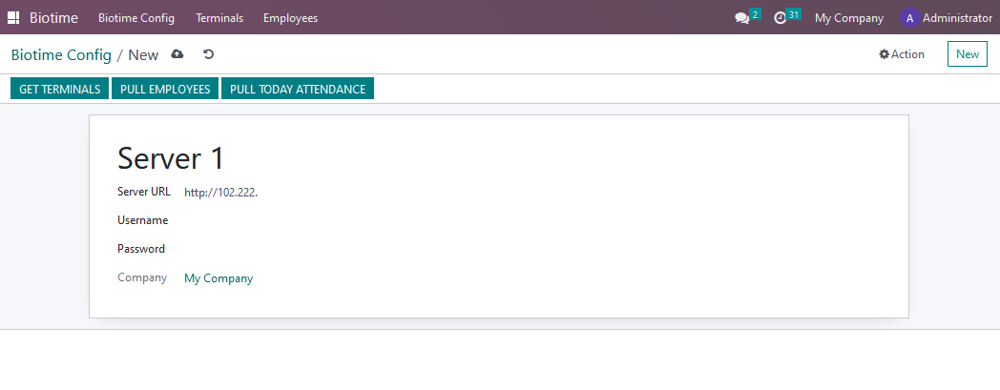
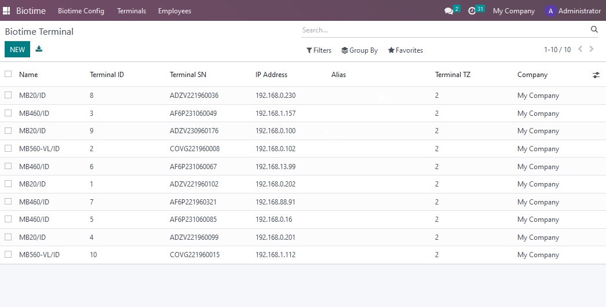
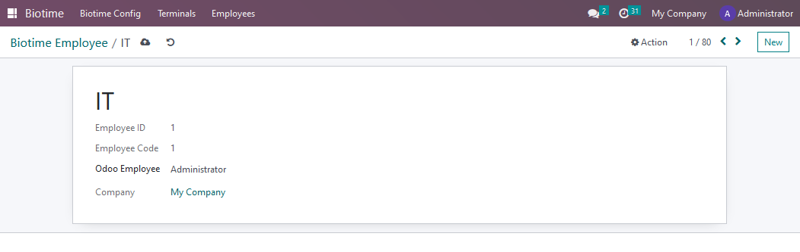
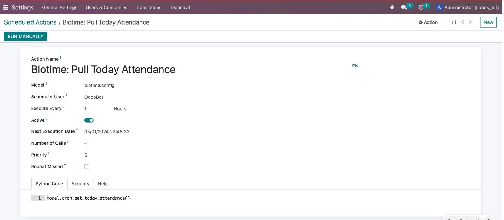

ZK Biotime Attendance System Integration
We specialize in integrating with ZK biotime software, eliminating the need to purchase static IPs for each ZK device. With our solution, you only need one IP address, allowing you to connect with any ZK device regardless of its type.
ZK Biotime Integration with Odoo
Connect to ZK Biotime SoftwareEstablish a seamless connection to ZK Biotime Software for efficient data integration.  |
Pull TerminalsRetrieve data from attendance terminals for comprehensive monitoring.  |
Pull EmployeeFetch employee data from the system for accurate attendance tracking. 
|
Map the Employee Between Odoo and ZKEstablish mapping between Odoo and ZK systems to ensure data consistency.  |
Pull AttendanceRetrieve attendance records for streamlined payroll and performance management. Use server action to do it automatically.  |